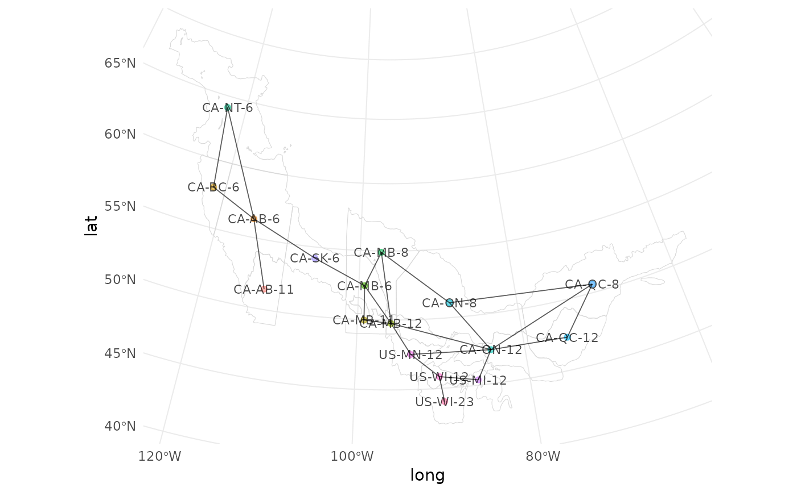

Given a spatial data frame containing polygons or points to outline strata,
a neighbourhood matrix is identified for use in run_model()
Usage
prepare_spatial(
strata_map,
prepped_data,
voronoi = FALSE,
nearest_fill = FALSE,
island_link_dist_factor = 1.2,
buffer_type = "buffer",
buffer_dist = 10000,
add_map = NULL,
label_size = 3,
quiet = FALSE
)Arguments
- strata_map
sf data frame. Map of the strata in (MULTI)POLYGONs. Must have column "strata_name" matching strata output from
prepare_data().- prepped_data
List. Output of
prepare_data().Use
@inheritParams common_docsto include the above in any function documentation with a matching argument (will only include matching args)- voronoi
Logical. Whether or not to use Voroni method for polygons. (Must use Voronoi method for points).
- nearest_fill
Logical. For strata with no neighbours, whether or not to fill in by centroids of the 2 nearest neighbours when not using the Voronoi method.
- island_link_dist_factor
Numeric. Distances within a factor of this amount are considered nearest strata neighbours. Used when linking otherwise isolated islands of strata, when not using the Voronoi method.
- buffer_type
Character. Which buffer type to use when using the Voronoi method. Must be one of
bufferorconvex_hull. See Details for specifics.- buffer_dist
Numeric. Distance to buffer and link the strata if not connected when using the Voronoi method. Units are that of
sf::st_crs(strata_map). This is the starting distance ifbuffer_type = "buffer"or the final distance ifbuffer_type = "convex_hull". See Details.- add_map
sf spatial object. Spatial data to add to map output.
- quiet
Logical. Suppress progress messages? Default
FALSE
Details
When using the Voronoi method, a buffer is used to fill around and link
strata together. If the buffer_type is buffer, buffer_dist is the
starting distance over which to buffer. If not all strata are linked, this
distance is increased by 10% and applied again, repeating until all strata
are linked. If buffer_type is convex_hull, then a convex hull is used to
link up the strata before appling a buffer at a distance of buffer_dist.
Note that all distances are in the units of sf::st_crs(strata_map).
Examples
bbs_data <- stratify(by = "bbs_cws", species = "Connecticut Warbler")
#> Using 'bbs_cws' (standard) stratification
#> Loading BBS data...
#> Filtering to species Connecticut Warbler (6780)
#> Stratifying data...
#> Combining BCR 7 and NS and PEI...
#> Renaming routes...
model_data <- prepare_data(bbs_data, min_max_route_years = 2)
map <- load_map("bbs_cws")
sp <- prepare_spatial(map, model_data)
#> Preparing spatial data...
#> Identifying neighbours (non-Voronoi method)...
#> Formating neighbourhood matrices...
#> Plotting neighbourhood matrices...
# Visually explore the spatial linkages
sp$map

# Overlay subset strata map on original mapping data
sp <- prepare_spatial(map, model_data, add_map = map)
#> Preparing spatial data...
#> Identifying neighbours (non-Voronoi method)...
#> Formating neighbourhood matrices...
#> Plotting neighbourhood matrices...
sp$map
